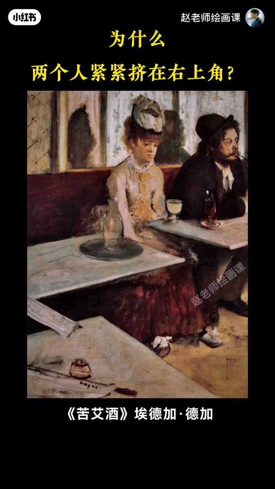
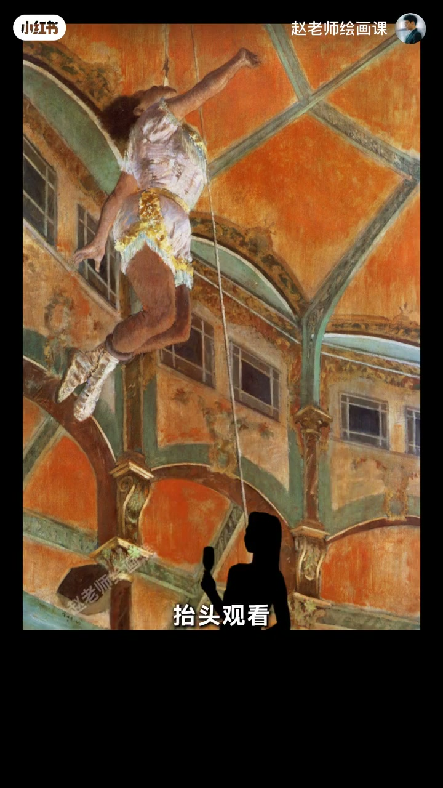
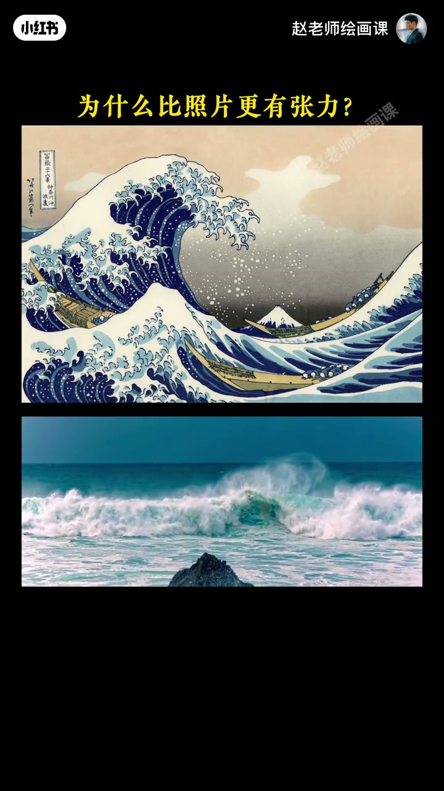
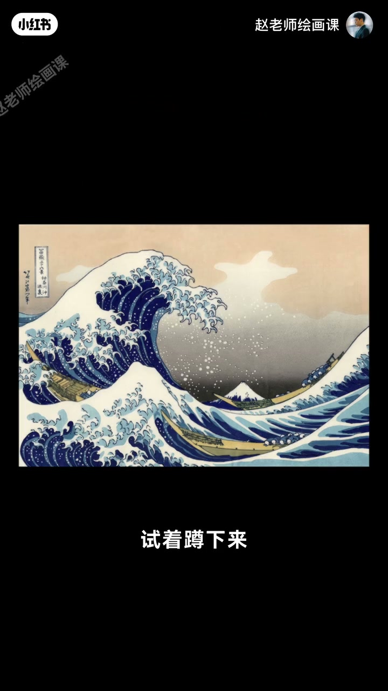

内容要点
第一视角视频为何吸引人？三个字：沉浸感。画画拍照也能造——德加《苦艾酒》把人物挤右上角，巨大空桌面不是浪费，而是让你变成现场窥视者；马戏仰视图把你摁在观众席抬头看；北斋巨浪不是让你看浪，而是把你扔进浪里。核心：别再做旁观者，要当参与者——蹲下来用孩子眼睛看，或借窗与人影取景。作业拍一张。
知识结构
空桌面＝同场空间；非合影而是偷窥者。
摁在观众席抬头看，沉浸感拉满。
扔进浪里；蹲下／借窗取景；交作业。
沉浸感来自机位与空间设计：把观众放进场景里的「参与者座位」，而不是标准合影旁观位。
00:00-00:54《苦艾酒》：空桌面创造同场
第一视角视频吸引人的答案是沉浸感；画画拍照当然也能制造。德加早把技巧玩到登峰造极。《苦艾酒》里两人为何紧紧挤在右上角？空荡桌面有何用？回想咖啡馆余光瞥见隔壁男女——德加没用标准合影构图，而把我们变成现场偷窥者。
巨大空桌面不是浪费，而是创造你与画中人都在现场的真实空间。00:25 黄问句直指构图异样。

00:54-01:18马戏：摁在观众席
若要表现马戏团惊险表演，德加直接把看画的你摁在观众席上抬头观看，仿佛连演员喘息都能听见，沉浸感拉满——这就是参与者视角的魅力。
01:05 底部黑剪影「抬头观看」把观众座位画进画面。

01:18-02:18巨浪练习：当参与者
对照葛饰北斋名作与真实海浪照片：画为何更有张力？因为它不是让你看浪，而是把你扔进浪里，吞噬一切的惊险扑面而来。用好视角的核心：别再做旁观者，要当参与者。
下次试着蹲下来用孩子眼睛看世界，或借一扇窗、一个人影去取景，创造窥视真实感。作业：用参与者视角拍一张，评论区交美作。


完整转录（59段）
以下文本由 Whisper medium 模型自动转录，可能存在少量识别误差，已尽可能修正。
为什么第一视角的视频这么吸引人
答案就三个字
沉浸感
那我们在画画拍照时
能不能也制造这种沉浸感
当然能
一百多年前印象派大师德嘉
早把这个技巧玩得登峰造极
来看他的名作《苦爱酒》
为什么两个人紧紧的挤在右上角
空荡荡的桌面有什么用呢
用处可太大了
回想一下
在咖啡馆里
你是不是也曾用余光撇见隔壁那桌
那样一对男女
德嘉没有用标准的合影构图
而是把我们变成了现场的偷窥者
这张巨大的空桌面不是浪费
而是创造了一个你与画中人
都在现场的真实空间
再想想啊
如果想要表现马戏团的经验表演
怎么来构图
德嘉直接把看画的你
摁在了观众席上
抬头观看
你仿佛连演员的喘息声都能听得到
神经感直接拉满
这就是参与者视角的魅力
还有《可是北斋》的这幅名作
我们对比一下
为什么会比一张真实的海浪照片
更显得有张力呢
因为它不是让你看浪
而是把你扔进了浪里
那种巨浪要吞噬一切的惊险
则是扑面而来
那想要用好这个视角
一定要记住一个核心
别再做旁观者
要当参与者
下次创作时
试着蹲下来
用孩子的眼睛来看这个世界
或者借一扇窗
一个人影去取景
创造那种窥视的真实感
今日份作业
拿起你的相机
用参与者视角去拍下一张照片吧
评论区等着大家的美作
如果你的画面也想直抓人心
我在构成系统课里
为你准备好了从底层逻辑
到实战应用的全套方法
欢迎加入
我们课程见
拜拜